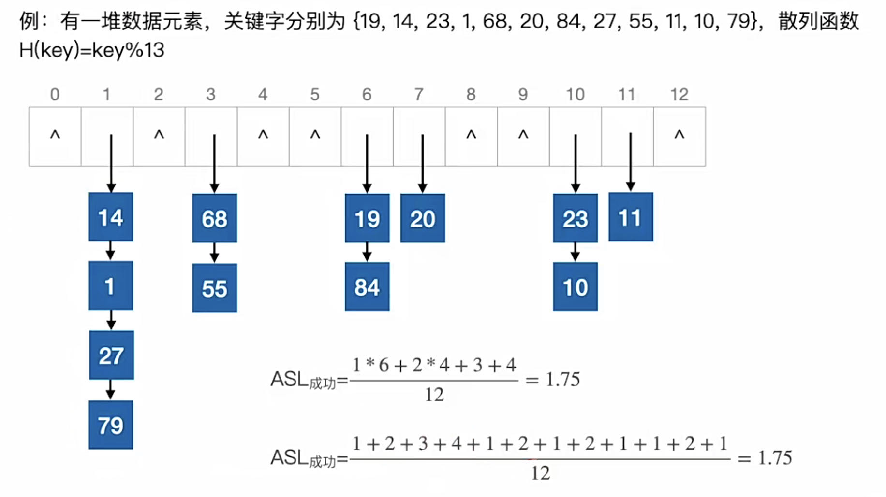
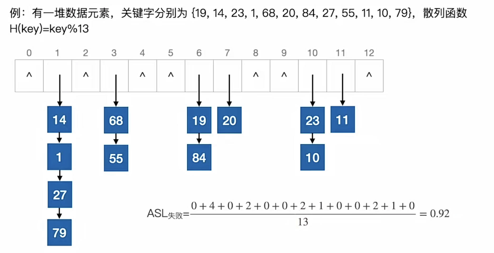

2022.11.02
直接定址法 $$ \begin{align} H(Key)=key或H(Key)=a\times key + b \end{align} $$
除留余数法 $$ \begin{align} H(Key)=key\% p \end{align} $$
数字分析法：分析给定数字集合的某几位分布均匀。
平方取中法：平方后去中间n位。
开放定址法 $$ \begin{align} H_i=(H(Key) + d_i)\% m \end{align} $$
线性探测法：di=0,1,2,3,...m。相当于一个位置占上了就放后一个。
平方探测法：di=0^2,1^2,-1^2,2^2,-2^2,...,k^2,-k^2。k≤m/2，m=4k+3，是素数
双散列法：di=Hash_2(key), i是冲突次数 $$ \begin{align} H_i=(H(Key) + i\times hash_2(key))\% m \end{align} $$
伪随机序列法
开放定址法的删除并不是直接删除，而是做一个删除的标记，定期维护。
拉链法：相同的位置形成一个链表
装填因子 = 表中记录数 / 散列表长度
ASL取决于三个因素：装填因子，散列函数，冲突处理方法
查找成功


【答案】：D->B
【答案】：C->D
【答案】：D
【答案】：C
【答案】：A
【答案】：
1.5 = [1+1/(1-a)]/2 -> 2=1/(1-a) -> a=0.5，A
【答案】：D
【答案】：C
【答案】：B->D
一组记录的关键字为{19,14,23,1,68,20,84,27,55,11,10,79}，用链地址法构造散列表，散列函数为 H(key)=key MOD 13，散列地址为 1 的链中有（ ）个记录. A. 1 B. 2 C. 3 D. 4
【答案】：C->D😭1也是！
在采用链地址法处理冲突所构成的散列表上查找菜一关键宇，则在查找成功的情况下，所探测的这些位置上的键值（ )；若采用线性探测法，则( ）. A. 一定都是同义词 B. 不一定都是同义词 C. 都相同 D. 一定都不是同义词
【答案】：AB
若采用链地址法构造散列表，散列函数为H(key)=key MoD 17，则需（①）个链表。这些链的链首指针构成一个指针数组，数组的下标范围为(②) ①
A. 17 B. 13 C. 16 D.任意
②
A.0~17 B 1~17 C:0～16 D:1~16
【答案】：AC
设散列表长m=14，散列函数为 H(key)=key%11，表中仅有4 个结点H(15)=4，H(38)=5, H(61)=6，H(84)=7，若采用线性探测法处理冲突；则关键字为 49 的结点地址是（ ） A. 8 B. 3 C. 5 D. 9
【答案】：A
将10个元素散列到 100000个单元的散列表中，则（）产生冲突。 A. 一定会 B. 一定不会 C. 仍可能会 D. 不确定
【答案】：C
【2011 统考真题】为提高散列表的查找效率，可以来取的正确措施是(） I. 增大装填（载）因子 II. 设计冲突（碰拉）少的散列函数 III. 处理冲突（碰撞）时避免产生聚集（堆积）现象 A.仅I B.仅II C.仅I、II D.仅II、III
【答案】：D
【2014 统考真题】用哈希（散列）方法处理冲突（碰撞）时可能出现堆积（聚集）现象，下列选项中，会受堆积现象直接影响的是（） A. 存储效率 B. 散列函数 C. 装填（装载）因子 D. 平均查找长度
【答案】：D
【2018 统考真题】现有长度为7、初始为空的散列表HT，散列函数H(K)=k%7，用线性採测再散列法解決冲突。将关键宇 22，43，15 依次插入 HT 后，查找成功的平均查找长度是(）。 A. 1.5 B. 1.6 C. 2 D. 3
【答案】：22(1->1)，43(1->2)，15->(1->3),1+2+3/3=2，C
【2019统考真题】现有长度为11旦初始为空的散列表HT，散列函数是H(key)=key%7，采用线性採查（线性探测再散列）法解决冲突。将关键宇序列 87,40,30,6,11,22,98,20 依次插入HT后，HT 查找失败的平均查找长度是(）. A. 4 B. 5.25 C. 6 D. 29
【答案】：87(3->3),40(5->5),30(2->2),6(6->6),11(4->4),22(1->1),98(0->0),20(6->7)
【错】 (2+3+4+5+6+7+8)/7=107/7，Null的比较也算一次*
(3+4+5+6+7+8+9)/7=127/7/2=6*
散列函数不能算出地址7！